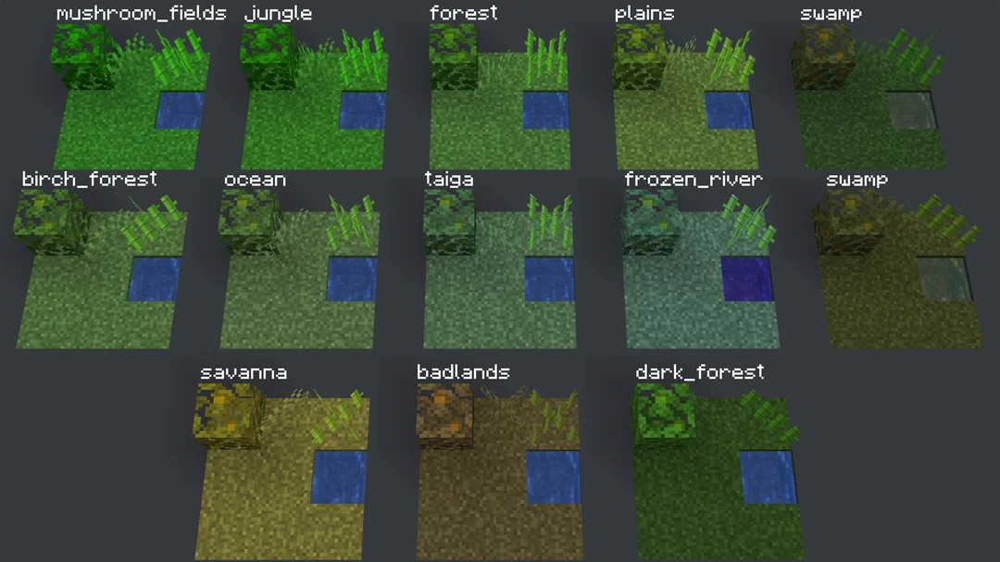
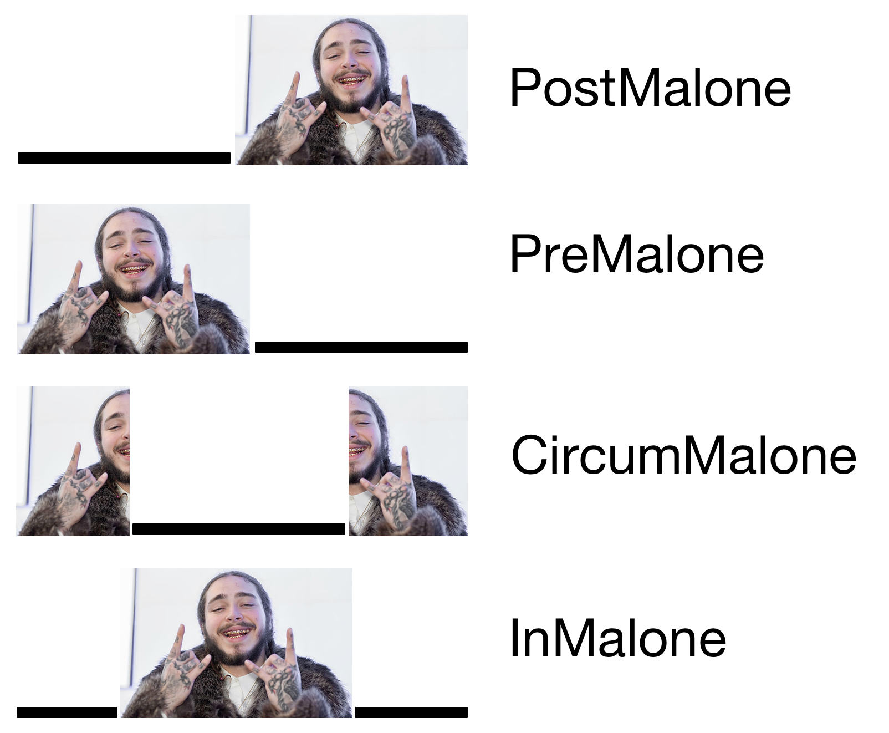
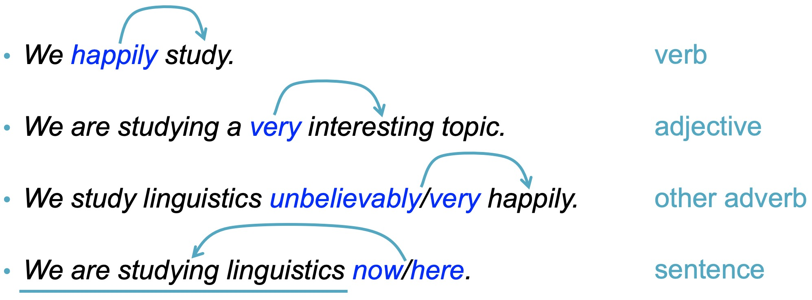
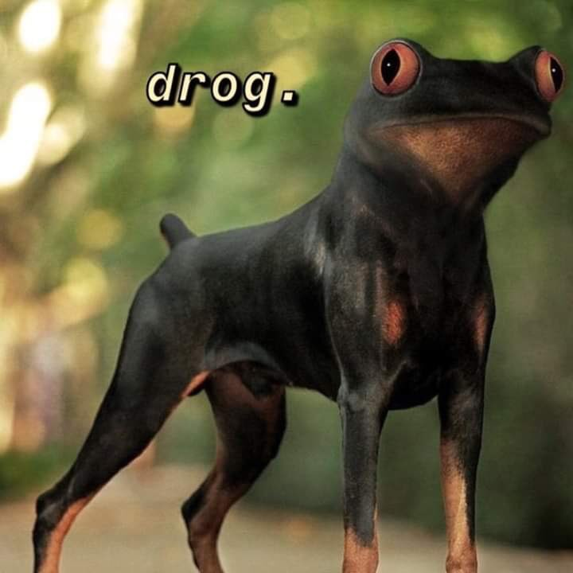
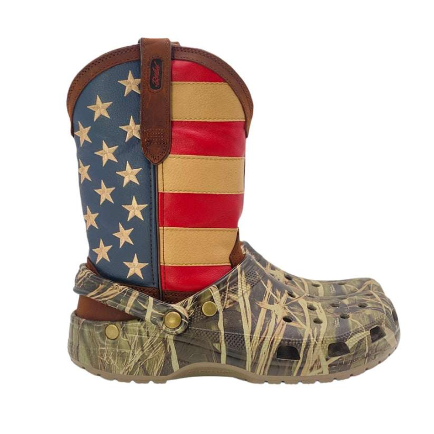

IA office hours are often empty and sad!
If you don’t ‘get’ phonology or IPA yet, go, let them help you
Also check out the Video on the Bantu dataset
It’s a good idea to review the lecture notes before sections

What is morphology?
Types of morphemes
Types of words
Building new words
They’re often made of smaller components
These components are called ‘morphemes’
We can detect these components by looking for correspondences between form and meaning
“If the same meaning keeps showing up with the same form in a word, that chunk of form must carry meaning!”
/kæt/ vs /kæts/
/sit/ vs. /sits/
/pat/ vs. /pats/
“Huh, it sure looks like words with -s at the end are plural. ‘-s’ must be a meaningful chunk!”
These recurring chunks that seem to have meaning are morphemes
… and each morpheme’s meaning contributes to the word’s meaning!
played (play-ed)
blacken (black-en)
unroll (un-roll)
depressurization (de-pressure-ize-ation)
Can stand on their own, do not have to attach to some other form
Cat, Show, Class, Panda, Walk, Purple
Can’t stand on their own, must be attached to some other morpheme
Prefixes - Go before the root
Suffixes - Go after the root
Infixes - Go inside the root
Circumfixes - Go to either side of the root

Prefix
Suffix
Infix
Circumfix
Bush-fix
Prefix
Infix
Circumfix
Bush-fix
There are many, many kinds of morphemes
Accomplishing many tasks
… and they’re the building blocks of words
Sometimes just one, sometimes many
… but once constructed, words have many different types
Also known as “Parts of Speech”
The types of words which occur in language
Nouns: bike, car, cat, dog, tofu, dude, bling
Verbs: go, eat, talk, walk
Adjectives: lit, sweet, hot, cool, awesome
Adverbs: well, fast, slowly, easily
Pre/postpositions: with, from, on, in
Determiners: the, a, that, this, those
Pronouns: she, he, him, her, it, I, you, they
Conjunctions: and, or, whenever, while
Numeral: one, twice, third
Interjection: ouch, tsk, damnit!
Describe a person, place or thing
Can be singular or plural
Can be paired with a determiner (e.g. “I like the/a…”)
I like the book/car/cat/show
*I like the angry/rotate/beg/quickly
Can take tense marking in English
Can work with modals
Comparative Constructions
Superlative Constructions
Very/too Constructions
Words can be used as other categories
“Wow, that’s so fly”
“You look very… linguist today”
“I can’t adult right now”
Words that don’t fit the pattern
“the most nebulous and puzzling of the traditional word classes”
They can modify anything non-nominal

Temporal: Now, then, yesterday, always, tomorrow, next week
Locative: Here, there, abroad
Sentence: Perhaps, fortunately, honestly, frankly
Manner: Quickly, carefully, excitedly, beautifully
Linking: Therefore, thus, consequently
Degree: Very, too, extremely
Indicate a semantic relationship between other entities
“Any relationship a squirrel can have with a tree”
Under, around, on top of, behind, near, adjacent to, below, above, in, on…
These don’t change form in English
Many languages instead use postpositions, which go after the thing(s) they modify but function like prepositions.
English doesn’t have postpositions, but Turkish does!
Çocuk-lar bahçe-de oyn-uyor.
Kid-PL garden-in play-ing (PROG).
‘Kids are playing in the garden.’’
About half of the languages in WALS use postpositions
Inpositions and circumpositions are a thing too
Substitute for noun phrases
“I saw the gal who Kati noticed was carrying a hamster in her backpack”
“I saw her”
Personal Pronouns
Indefinite Pronouns
Interrogative Pronouns
Relative pronouns
Demonstrative pronouns
Determiners mark and precede nouns
The/an interesting book
Those cookies
Which movie did you see?
Determiners don’t vary in form
Possessive: My, your, her, our, his, its, their
Demonstrative: This, these, that, those
Interrogative: which, what, whose
Definite: the
Indefinite: a/an
‘The’ and ‘a’ walk into a bar. ‘A’ says, “Hey, what’s up bro, I haven’t seen you in ages. Are you still marking noun phrases?” ‘The’ replies “Definitely!”
Used to link expressions
Sunny and warm
Red or blue?
He rolled over while I was petting him.
Noun
Verb
Adjective
Preposition
Adverb
Noun
Verb
Adjective
Preposition
Adverb
Noun
Verb
Adjective
Preposition
Adverb
Although the lines between them can be blurrier or cleaner
… and some languages don’t necessarily use all of them
Nouns, Verbs, Adjectives, Adverbs are content words
Pre/Postpositions, Determiners, Pronouns, Conjunctions are function words
We very rarely gain new Function words (Pre/Postpositions, Determiners, Pronouns, Conjunctions)
We often gain new Content words (Nouns, Verbs, Adjectives, Adverbs)
Function words are a closed class, and content words are an open class
“I didn’t see the last Transformers movie because Michael Bay” (new preposition)
“I spent last night in the library doing homework slash looking at pictures of cats” (new conjunction)
Simp (Noun)
Stan (Verb)
Snatched (Adjective)
No cap (Adverb)
Slay (Verb)
We’ll talk about a few of the common ones here
Be thinking of examples of each kind
Low key/High Key
Down bad
Fuckboy
Norwegian: piggsvin
pigg ‘spike’ and svin ‘pig’
‘Hedgehog’
What else?
Situationship (situation+relationship)
Frenemy (friend+enemy)
Mansplain (man+explain)
Skoden (‘Let’s go then’)
What else?


Pupusa
Uber-cute
Kawaii
Chocolate
What else?
Simp (from “simpering”)
Pog/Poggers (from the Twitch “Pogchamp” emote)
Bougie/Boujee (clipped from “bourgeois/bourgeoisie”)
Drip (from “dripping”)
He caught an L (from “Loss”)
What else?
“I’m staying home because lazy.””
“I don’t want to adult today” or “I forgot how to Linguist for a minute there”
“I stan Joan Bybee”
“I can’t believe they’re doing that to their customers, the CEO might get Luigied”
Acronyms are pronounceable!
RAM
GOAT
NASA
WAP
What else?
Initialisms are pronounced as a series of letters
UCSD
UCB
ASL
IPA
What else?
Bling
doggo
dongle
uwu
What else?
thick/thicc
body count
Nerf
Cringe
Cap
What else?
Bank (of a river), bank (of America), bank (of a poker game), bank (shot in pool)…
This is called polysemy and we’ll talk about this a lot down the road!
Compounding
Blending
Borrowing from other languages
Changing the part of speech
Clipping
Acronyms and Initialism
Making it up
Changing the meaning
e-
-pill
-core
-ussy
What else?
Morphology is the study of how words are built
Words are made of Morphemes
Morphemes have different types
Words have different types
Words are made in many ways
We’ll finish up with morphology